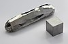

cadmium

Definition: Cadmium is a chemical element with the symbol Cd and atomic number 48. This soft, silvery-white metal is chemically similar to the two other stable metals in group 12, zinc and mercury. Like zinc, it demonstrates oxidation state +2 in most of its compounds, and like mercury, it has a lower melting point than the transition metals in groups 3 through 11. Cadmium and its congeners in group 12 are often not considered transition metals, in that they do not have partly filled d or f electron shells in the elemental or common oxidation states. The average concentration of cadmium in Earth's crust is between 0.1 and 0.5 parts per million (ppm). It was discovered in 1817 simultaneously by Stromeyer and Hermann, both in Germany, as an impurity in zinc carbonate.
Source: Wikipedia
Wikipedia Page (Something wrong with this association? Let us know.)
Wikidata Page (Something wrong with this association? Let us know.)